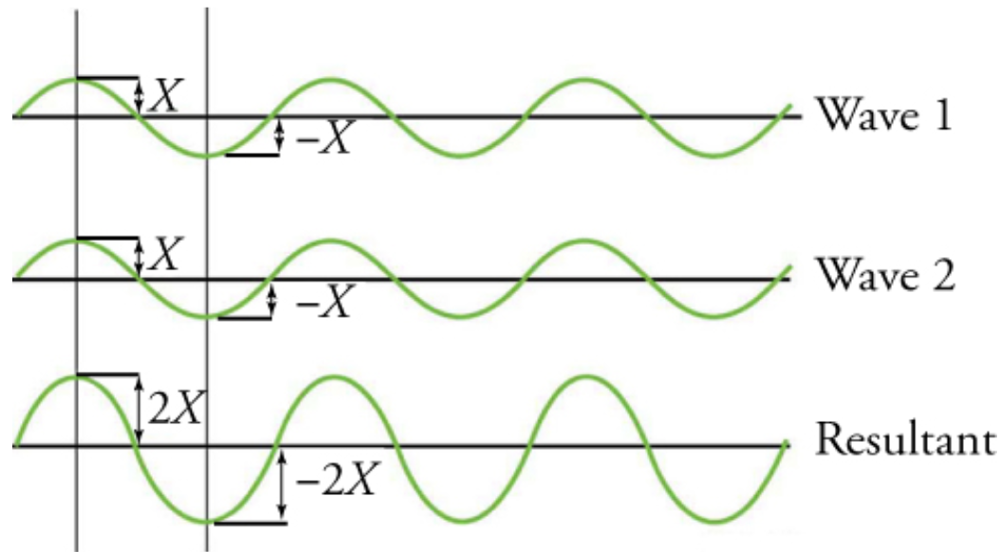

Waves can be understood as the perturbation that travels from a point of origin to another one. These can transport energy but not necessarily mass
OERWF - Open Educational Resource for the Wave Function
Waves
Types of waves
Some waves can need a source to propagate, like a solid space, meanwhile others do not need it. These differences that some waves have are explained by their classification based on their movement, we can divide the waves into two categories:
- Transversal waves: The material where the waves take place will go up and down, theses waves move in one direction perpendicular to the wave propagation.
_0.17.16.png "Figure 1. Representation of the movement of transversal waves.")
- Longitudinal waves: These waves are parallel to the direction of the wave propagation, this means that they are heading to the same point to which they are traveling to.
_0.18.04.png "Figure 2. Representation of the movement of longitudinal waves.")
Wave characteristics
Waves can be described by 5 characteristics
- Wave length (λ), the distance between the maximum and minimum points in the wave
- Amplitude (A), the distance between the not perturbed position and the maximum displacement of the wave
- Velocity (v), the velocity of the wave propagation
- Period (T), the time that the waves takes to complete one cycle
- Frequency (f), number of waves passing through an specific point per minute
Wave superposition
There exists a phenomenon where two or more waves are combined in the same place at the same time. There are two cases of this phenomenon, the pure constructive interference and the pure destructive interference.
The pure constructive interference, takes place when two or more identical waves reach an equal point at the same time and are summed, resulting in a wave with the same length but with the double of amplitude of the individual waves.

A pure destructive wave ocurs when the identical waves come from different directions, as a result they get canceled between them.
_0.29.58.png "Figura 4. Interferencia destructiva pura (explicación visual)")
Work published with Creative Commons License Attribution-ShareAlike 4.0 International